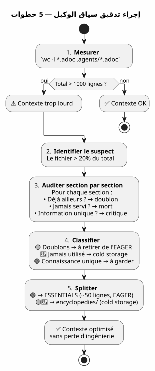

مراجعة سياق الوكيل: عندما تصبح حوكمتك الخاصة هي المشكلة — وكيف تصلحها دون فقدان أي شيء
Publié le 27 April 2026
قضيت أسابيع لبناء حوكمة وكيل لا تشوبها شائبة. متحمّس/كسول، إجراء انتهاء الجلسة، نسخ احتياطية دورية. يعمل النظام. ثم ذات يوم يصبح الوكيل بطيئًا. الاجابات مخفّفة. تقيس: 1414 سطرًا تم تحميله تلقائيًا.والأسوأ أن المسؤول ليس الكود، ولا الباكلوغ، ولا أرشيفات الجلسات. المسؤول هو الملف الذي يوثّق طريقتك.
- الوسواس القهري
-
[]
المشهد: الجلسة 051، شيء ما غير صحيح
30 أبريل 2026، 16:00. أنا في منتصف الجلسة على`magic-stick`, مشروعي لبناء ISO Linux الحية. قام وكيل Opencode بتحميل ملفاتي Eager تلقائيًا كالمعتاد —AGENT.adoc, PROMPT_REPRISE.adoc, .agents/INDEX.adoc. كل شيء طبيعي.
لكن الإجابات رخوة. يستغرق الوكيل ثانيتين إضافيتين للتفكير. ينسى تفاصيل كان أمامه قبل ثلاث رسائل. هذا ليس تعطلًا ولا خطأً — بل هو تدهور بطيء، النوع الذي لا يُلاحظ فورًا.
لقد عشت ذلك بالفعل في الجلسة 048، عندما اكتشفت أن ملفات الحوكمة كانت تزن 5200 سطرًا متراكمًا. بعد ذلك صَغَّرْتُ مفهوم الآلية Hot/Warm/Cold مع نافذة انزلاقية من 10 جلسات، وأمواج باردة متطابقة، ومستشعر باثنين من المشغلات. تم حل المشكلة. من الناحية النظرية.
لكننا الآن في الجلسة 051. حدثت عملية النسخ الاحتياطي بنجاح — انخفض عدد ملفات EAGER من 2087 إلى 500 سطر. ومع ذلك، يظل السياق ثقيلًا. هناك شيء يفوتني.
أفتح طرفًا وأكتب :
wc -l AGENT.adoc AGENT_MODUS_OPERANDI.adoc PROMPT_REPRISE.adoc \
.agents/INDEX.adoc .agents/SESSIONS_HISTORY.adoc \
.agents/archives/COMPLETED_TASKS_ARCHIVE_2026-04.adoc 287 AGENT.adoc
627 AGENT_MODUS_OPERANDI.adoc
51 PROMPT_REPRISE.adoc
218 .agents/INDEX.adoc
18 .agents/SESSIONS_HISTORY.adoc
213 .agents/archives/COMPLETED_TASKS_ARCHIVE_2026-04.adoc
1414 total1414 سطر. لقد نفذت دورية النسخ الاحتياطي بشكل جيد في INDEX، SESSIONS_HISTORY و COMPLETED_TASKS — هم نظيفون. لكن هناك فيل في الغرفة لم أره :627 سطرفي ملف واحد.AGENT_MODUS_OPERANDI.adoc.
هذا الملف هو الذي كتبته في الجلسة 1 لتوثيق استراتيجية Eager/Lazy. إنه دليل الطريقة. وأصبح وحده يشكل 44% من السياق EAGER.
Failed to generate image: PlantUML preprocessing failed: [From <input> (line 8) ] @startuml skinparam backgroundColor #FEFEFE title سياق EAGER — 1414 أسطر rectangle "AGENT_MODUS_OPERANDI **627 أسطر (44%)**" as MOD #FFCDD2 rectangle "AGENT.adoc 287 أسطر (20%)" as AG #BBDEFB ^^^^^ Syntax Error? (Assumed diagram type: activity) @startuml skinparam backgroundColor #FEFEFE title سياق EAGER — 1414 أسطر rectangle "AGENT_MODUS_OPERANDI **627 أسطر (44%)**" as MOD #FFCDD2 rectangle "AGENT.adoc 287 أسطر (20%)" as AG #BBDEFB rectangle "INDEX.adoc 218 سطر (15%)" as IDX #C8E6C9 rectangle "COMPLETED_TASKS\n213 أسطر (15%)" as ARC #FFF9C4 rectangle "PROMPT_REPRISE 51 أسطر (4%)" as PRO #E1BEE7 rectangle "SESSIONS_HISTORY 18 أسطر (1%)" as HIS #FFE0B2 note bottom of MOD Le fichier qui documente la méthode est devenu le plus gros poste de dépense end note @enduml
السخرية تامة. الملف المصمم لـ توفير السياق أصبح المستهلك الرئيسي مستهلك للسياق. إنه كما لو أن دليل استخدام سيارتك يزن أكثر من المحرك.
التدقيق: تفكيك 627 سطر
أقرر إجراء تدقيق قسمًا بقسم. ليس للحذف — بل لتفهم ما يستحق أن يكون في EAGER وما يمكن أن يعيش في مكان آخر دون فقدان للمعرفة.
هنا الهيكل الدقيق لـ`AGENT_MODUS_OPERANDI.adoc`وما أجده فيه :
القسم |
خطوط |
المحتوى |
موجود بالفعل في… |
P1 — نظرة شاملة |
64 |
المشكلة تم حلها, المبادئ الأساسية, مقارنة لوحة العدادات مع الدليل |
— |
P2 — بنية الملفات |
97 |
الشجرة، سياسة التحميل، متى تحمّل ماذا |
— |
P3 — قواعد مطلقة |
34 |
Git ممنوع، الأوامر المدمرة ممنوعة، الأسرار ممنوعة |
|
P4 — دورة حياة الجلسة |
133 |
قالب الافتتاح، قواعد العمل، 6 خطوات نهاية الجلسة، قائمة مراجعة |
|
P5 — المقاييس والعتبات |
49 |
الجلسة المثالية (15-30 دقيقة، 1-3 ملفات)، علامات تحذير |
— |
P6 — أنواع الجلسات |
72 |
جدول الكشف، شكل الاقتراح، الاستثناءات |
— |
P7 — تحسين مستمر |
39 |
مقاييس المتابعة، مراجعة أسبوعية |
</think> |
P8 — قائمة بدء |
13 |
موقع بوتستراب جديد |
— |
P9 — المراجع |
30 |
ملفات المرجع، الموارد الخارجية |
|
الملاحق أ+B |
42 |
قائمة المصطلحات، تاريخ الإصدارات |
— |
الحكم نهائي :
-
المكررات التامة(167 سطر) : P3, P4, P9 — كل شيء موجود بالفعل`AGENT.adoc` ou
INDEX.adoc, غالبًا كلمةً بكلمة -
لم يُستشار أبدًا في الممارسة(215 سطر) : P5, P6, P7, P8، الملاحق — من الحاكمية الميتا التي لم تُستخدم أبدًا في أي جلسة
-
معرفة فريدة(161 أسطر) : P1 و P2 — المصطلحات LAZY/EAGER، التشبيه، سياسة التحميل
على 627 سطر382 هم ضوضاء. وهذه 382 سطرًا يتم تحميلها في بداية كل جلسة، تستهلكها الوكيل، وتشتت انتباهه قبل أن أقول مرحبًا.
Failed to generate image: PlantUML preprocessing failed: [From <input> (line 8) ]
@startuml
skinparam backgroundColor #FEFEFE
skinparam defaultTextAlignment center
title تدقيق ملف AGENT_MODUS_OPERANDI.adoc — 627 سطر
left to right direction
rectangle "�🟡 **التكرارات**
^^^^^
Syntax Error? (Assumed diagram type: class)
@startuml
skinparam backgroundColor #FEFEFE
skinparam defaultTextAlignment center
title تدقيق ملف AGENT_MODUS_OPERANDI.adoc — 627 سطر
left to right direction
rectangle "�🟡 **التكرارات**
167 أسطر (27%)" as DUP #FFF9C4 {
card "P3 — القواعد المطلقة
(34 أسطر)" as D1
card "P4 — دورة الحياة
(133 سطر)" as D2
card "P9 — المراجع
(30 أسطر)" as D3
}
rectangle "�🔴 **لم يُستشار أبدًا**
215 سطرًا (34%)" as JAM #FFCDD2 {
card "P5 — المقاييس
(49 أسطر)" as J1
card "P6 — كشف
(72 أسطر)" as J2
card "P7 — تحسين
(39 أسطر)" as J3
card "P8 — Bootstrap
(13 سطرًا)" as J4
card "ملاحق — معجم
(42 سطر)" as J5
}
rectangle "🟢 **معرفة فريدة**\n161 سطر (26%)" as UNI #C8E6C9 {
card "P1 — نظرة عامة
(64 سطر)" as U1
card "P2 — هيكل الملفات
(97 أسطر)" as U2
}
note bottom of UNI
C'est ÇA qu'il faut garder en EAGER.
Le reste → cold storage.
end note
@enduml
هذا المخطط هو مفتاح كل شيء. التكرارات (الصفراء) هي ضوضاء صافية — الوكيل يقرأها مرتين، في ملفين مختلفين. ما لم يُستشار أبدًا (الأحمر) هو توثيق ميت — كُتب بعناية، لم يُستخدم أبدًا. فقط الأخضر يحتوي على معرفة لا يستطيع الوكيل العثور عليها في مكان آخر.
الخوف من فقدان الهندسة
في هذه المرحلة، لديّ الدليل أمام عيني: يجب أن أقلّص`AGENT_MODUS_OPERANDI.adoc`. لكنني أتردد
هذا الملف كتبته يدويًا. كل قسم هو نتيجة درس تعلمته في جلسة حقيقية. الجزء P3 ولد من`rm -rf`العرضي على`bakery-plugin`كلفني رموز Firebase الفعلية. الجزء P4 هو نتيجة خمسة عشر جلسة كنت خلالها أنسى أن أُجري الأرشفة وأضيع مساري. الإجراء المكون من ست خطوات لم يخرج من كتاب — بل نشأ من الألم.
حذف هذه الأقسام سيكون رميًا لتاريخ هندستي الخاصّة. الدروس التي أنتجتْها، والجلسات خلالها اكتشفتُها، والأخطاء التي لا أرغب أبداً في إعادتها مرة أخرى. هذا ليس نصًّا — بل هو خبرة متبلّورة.
هذا هو المكان الذي أصيغ فيه المبدأ الذي سيوجه الحل :
_ لا تحذف أبداً. أعد التوزيع دائماً.لا يتعين على المعرفة أن تختفي من المشروع؛ بل يجب عدم تحميلها تلقائيًا عندما لا تكون ضرورية. _
الحل : التقسيم الموسوعي
النموذج الذي أقترحه بسيط ويستلهم الطريقة التي نشأت بها ويكيبيديا: عندما يصبح المقال طويلًا جدًا، لا نقطعه — بل ننشئ مقالًا مفصلاً ونبقي ملخصًا في المقال الرئيسي.
ل`AGENT_MODUS_OPERANDI.adoc`، هذا يعطي:
-
استخراجال161 سطرًا من المعرفة الفريدة (P1 + P2) في ملف جديد`LAZY_EAGER_ESSENTIALS.adoc`— مضغوط إلى ~50 سطرًا، بصرامة EAGER
-
إعادة تسمية
AGENT_MODUS_OPERANDI.adocen.agents/encyclopedies/LAZY_EAGER_ENCYCLOPEDIE.adoc— الملف الأصلي المكون من 627 سطرًا، محفوظ كما هو، في التخزين البارد -
لا تشحن أبداًملف الموسوعة تلقائيًا — إنه متواجد للإنسان، للتقطير المستقبلي، للوكيل الذي سنستدعيه خلال ستة أشهر باستخدام نموذج أفضل
Failed to generate image: PlantUML preprocessing failed: [From <input> (line 8) ]
@startuml
skinparam backgroundColor #FEFEFE
skinparam defaultTextAlignment center
title مقسم موسوعي — AGENT_MODUS_OPERANDI
left to right direction
rectangle "**`AGENT_MODUS_OPERANDI.adoc`**
^^^^^
Syntax Error? (Assumed diagram type: class)
@startuml
skinparam backgroundColor #FEFEFE
skinparam defaultTextAlignment center
title مقسم موسوعي — AGENT_MODUS_OPERANDI
left to right direction
rectangle "**`AGENT_MODUS_OPERANDI.adoc`**
627 سطر
(قبل التقسيم)" as BEFORE #FFCDD2 {
}
rectangle " " as ARROW1
rectangle " " as ARROW2
rectangle "**LAZY_EAGER_ESSENTIALS.adoc**
**~50 أسطر — EAGER**" as ESS #C8E6C9 {
card "P1 مختصرة\n(15 أسطر)" as E1
card "P2 مكثفة
(35 سطرًا)" as E2
}
rectangle "**.agents/encyclopedies/**
**LAZY_EAGER_ENCYCLOPEDIE.adoc**
627 أسطر — COLD" as ENC #BBDEFB {
card "P1 إلى الملاحق
(كامِل، سليم)" as C1
}
BEFORE -[#4CAF50]-> ESS : "استخراج
المعرفة الحرجة"
BEFORE -[#2196F3]-> ENC : "الحفاظ الشامل
من الهندسة"
note bottom of ESS
Chargé automatiquement
en début de session
→ L'agent comprend le vocabulaire
end note
note bottom of ENC
Jamais chargé automatiquement
Consultable par l'humain
Matériau brut pour distillation future
end note
@enduml
الاسم`encyclopedies/`ليس هذا أمرًا تافهاً. encyclopedia ليس ملف أرشيف — بل مجموعة من المعرفة المنظمة، قابلة للتشاور لكنها غير قابلة للحمل. لا تُقرأ موسوعة Universalis في المترو. نحتفظ بها في المكتبة، ونذهب إليها عندما يكون لدينا سؤال محدد.
هذا بالضبط دور هذا المجلد : مكتبة مرجعية باردة، منظمة، شاملة — الذي لا يلمسه الوكيل تلقائيًا.
محتوى الملف ESSENTIALS
هذا ما يبدو عليه الملف الجديد عمليًا`LAZY_EAGER_ESSENTIALS.adoc`, المستخرج والمضغوط من P1 وP2 :
= Stratégie LAZY/EAGER — Principes Essentiels
[abstract]
Ce fichier définit la stratégie de gestion du contexte agent.
Chargé automatiquement (EAGER) en début de session.
== Principes
|===
| EAGER | LAZY
| Tableau de bord | Manuel du propriétaire
| Chargé automatiquement | Chargé sur demande
| <= 100 lignes, <= 10k tokens | Illimité, détaillé
| Règles absolues, mission courante | Archives, historique, références
|===
== Politique de Chargement
|===
| Fichier | Type | Quand charger
| PROMPT_REPRISE.adoc | EAGER | Début session (auto)
| *_ESSENTIALS.adoc | EAGER | Début session si EPIC active
| .agents/INDEX.adoc | EAGER | Début session (auto)
| *_REFERENCE.adoc | LAZY | Sur besoin (détails architecture)
| .agents/sessions/N-*.adoc | LAZY | Sur demande (détails session)
| .agents/encyclopedies/*.adoc | COLD | Jamais auto (humain seulement)
|===
== Comment l'Agent Sait Quoi Charger
Début session → PROMPT_REPRISE + INDEX + ESSENTIALS actifs.
Besoin de détails → charger les *_REFERENCE et sessions/ en LAZY.
Connaissance froide → encyclopedies/, jamais automatique.خمسون سطرًا. هذا كل ما يحتاجه الوكيل لفهم الميكانيكا. كل ما عدا ذلك — تاريخ الدروس، والتشبيهات المفصلة، والإجراءات خطوة بخطوة، والملاحق — يعيش في الموسوعة.
والأهم:لم يُحذف شيء. ال 627 سطرًا هندسيًا ما زلن موجودات، في`.agents/encyclopedies/LAZY_EAGER_ENCYCLOPEDIE.adoc`. إنها فقط موضوعة في المكتبة وليس على سطح العمل.
النتيجة: -50% من السياق EAGER
قبل الانقسام :
287 AGENT.adoc
627 AGENT_MODUS_OPERANDI.adoc
51 PROMPT_REPRISE.adoc
218 .agents/INDEX.adoc
18 .agents/SESSIONS_HISTORY.adoc
213 .agents/archives/COMPLETED_TASKS_ARCHIVE_2026-04.adoc
1414 totalبعد التقسيم :
287 AGENT.adoc
50 LAZY_EAGER_ESSENTIALS.adoc ← remplace 627 lignes
51 PROMPT_REPRISE.adoc
218 .agents/INDEX.adoc
18 .agents/SESSIONS_HISTORY.adoc
213 .agents/archives/COMPLETED_TASKS_ARCHIVE_2026-04.adoc
837 total ← -41%Failed to generate image: PlantUML preprocessing failed: [From <input> (line 6) ] @startuml skinparam backgroundColor #FEFEFE title السياق EAGER بعد التقسيم الموسوعي — 837 سطرًا (-41%) rectangle "AGENT.adoc 287 أسطر (34%)" as AG #BBDEFB ^^^^^ Syntax Error? (Assumed diagram type: activity) @startuml skinparam backgroundColor #FEFEFE title السياق EAGER بعد التقسيم الموسوعي — 837 سطرًا (-41%) rectangle "AGENT.adoc 287 أسطر (34%)" as AG #BBDEFB rectangle "INDEX.adoc 218 أسطر (26%)" as IDX #C8E6C9 rectangle "COMPLETED_TASKS 213 أسطر (25%)" as ARC #FFF9C4 rectangle "PROMPT_REPRISE 51 أسطر (6%)" as PRO #E1BEE7 rectangle "الأساسيات 50 أسطر (6%)" as ESS #A5D6A7 rectangle "SESSIONS_HISTORY\n18 أسطر (2%)" as HIS #FFE0B2 note bottom of ESS De 627 → 50 lignes 577 lignes d'ingénierie préservées en cold storage Rien de perdu. Tout de relocalisé. end note @enduml
أكبر مستهلك (AGENT_MODUS_OPERANDI، 627 سطرًا) تم استبداله بملف من 50 سطرًا. الفائدة فورية: 577 سطرًا من السياق تم تحريرها. الوكيل يتنفس.
وفي`.agents/encyclopedies/`,ينتظر الملف الأصلي المكون من 627 سطر. سليم. مع جميع أقسامه — بما فيها celles التي هي مكررات، بما فيها celles qui لم تُستعمل أبدًا. لأنه يومًا ما، سيحتاج نموذج أفضل أو عالم بيانات بشري إلى مقارنة هذه الزوايا، هذه التكرارات المفترضة، هذه الدروس المستفادة. وفي ذلك اليوم، ستكون المادة الأولية موجودة.
لماذا يُسمى المجلد `encyclopedies/
اختيار الاسم ليس مجرد زخرفة. إنه يشفّر فلسفة الآلية.
أرشيف (archives/) يحتوي على بيانات تاريخية منظمة زمنياً — مثل COMPLETED_TASKS الشهرية. نسخة احتياطية (backup/) هو لقطة مؤرخة — نسخة احتياطية من حالة ماضية.
موسوعة، هذا شيء آخر. إنها مجموعة من المعرفة الموضوعية، منظمة حسب الموضوع، شاملة لكنها غير خطية. لا تقرأ موسوعة من البداية إلى النهاية. تغوص فيها للإجابة على سؤال محدد.
هذا هو exactamente عقد هذا الملف :
ملف |
دور |
الوصول |
الحبيبية |
|
البيانات التاريخية (المهام المكتملة شهريًا) |
LAZY, منظم |
تتابعي |
|
اللقطات الباردة (موجات من 10 جلسات) |
COLD, نسخة كاملة |
زمني |
|
معرفة موضوعية شاملة (المنهجية, الأنماط) |
كولد، أبداً تلقائيًا |
موضوع |
هذا التمييز يتجنب التجميع العشوائي. كل ملف يعرف أين يجب أن يعيش وفقًا ما يحتويه، وليس وفقًا متى تم إنشاؤه.
الاستمرار المنطقي للسلسلة
إذا كنت قد قرأت المقالتين الأوليتين، إليك كيف تتناسب القطع الثلاث مع بعضها:
Failed to generate image: PlantUML preprocessing failed: [From <input> (line 10) ]
@startuml
skinparam backgroundColor #FEFEFE
skinparam defaultTextAlignment center
skinparam wrapWidth 220
title ثلاثية حوكمة الوكيل
left to right direction
package "�📖 **Article 0108**\nاستراتيجية Eager/Lazy" as A1 #E8F5E9 {
card "ذاكرة الوكيل
^^^^^
Syntax Error? (Assumed diagram type: class)
@startuml
skinparam backgroundColor #FEFEFE
skinparam defaultTextAlignment center
skinparam wrapWidth 220
title ثلاثية حوكمة الوكيل
left to right direction
package "�📖 **Article 0108**\nاستراتيجية Eager/Lazy" as A1 #E8F5E9 {
card "ذاكرة الوكيل
بين الجلسات" as M1
card "ملفات EAGER
(محمّلة تلقائيًا)" as M2
card "ملفات LAZY\n(عند الطلب)" as M3
card "إجراء من 6 خطوات" as M4
}
package "�🧊 **المادة 0110**
آلية Hot/Warm/Cold" as A2 #FFF9C4 {
card "شيخوخة
السياق" as V1
card "نافذة منزلقة
10 جلسات" as V2
card "موجة باردة
متطابقة" as V3
card "حساس بـ
زنادين" as V4
}
package "التدقيق + الحل الموسوعي" as A3 #BBDEFB {
card "تدقيق الملفات
EAGER" as E1
card "تحديد
هدر" as E2
card "Split
ESSENTIALS/موسوعة" as E3
card "الحفاظ
على الهندسة" as E4
}
A1 --> A2 : "الذاكرة تنمو
→ يتوجب وجود آلية
من الشيخوخة"
A2 --> A3 : "الشيخوخة لا تكفي
→ يجب تدقيق ما
يستحق أن يكون في EAGER"
note bottom of A3
✅ Les trois couches sont en place
sur 6 projets actifs
end note
@enduml
-
0108يجيب على: « كيف نعطي الوكيل ذاكرة بين الجلستين ?
-
0110يجيب على: «كيف تمنع هذه الذاكرة من اختناق الوكيل؟
-
0111يجيب على: « وماذا لو لم تكن المشكلة هي حجم الأرشيفات، بل ما اخترناه أن نضعه في وضع EAGER ؟
المقال الأول بنى البنية. المقال الثاني أضاف آلية الشيخوخة. المقال الثالث يراجع المحتوى — ويكتشف أن المنهجية نفسها أصبحت المشكلة.
ما كنت سأفعله بشكل مختلف
مع مرور الوقت، أرى الخطأ في التصميم الأولي.`AGENT_MODUS_OPERANDI.adoc`تم إنشاؤه كوثيقة وحيدة — بيان. كان هذا الأسلوب الصحيح لتأصيل الفكرة. ولكن بمجرد تأصيل الفكرة، كان ينبغي تقسيم الوثيقة فورًا: الأساس في EAGER، والشامل في cold.
لم أفعل ذلك لأنني كنت فخورًا بالمستند. 627 سطرًا من الهندسة البحتة، مكتوبة يدويًا، كل قسم ثمرة درس جلسة. كان هذا عملي. وكما هو الحال مع كل كاتب، واجهت صعوبة في تقطيعه.
الدرس :ليس لأن وثيقة ما جيدة فإنها يجب أن تُحمَّل تلقائيًا. جودة المحتوى لا علاقة لها بملاءمته ل
اليوم، القاعدة بسيطة: أي مستند يزيد عن 100 سطر في سياق EAGER هو مشتبه به. يستحق تدقيقًا. ليس إدانة — تدقيقًا. والسؤال لا يظل أبدًا « هل ينبغي حذفه؟ » بل « هل ينبغي تحميله في كل جلسة؟
الدليل لتدقيق سياقك الخاص
إذا قمت باتباع المقالتين الأوليين وإعداد حوكمتك الخاصة Eager/Lazy، إليك إجراء تدقيق من خمس خطوات :
-
قياس:`wc -l`على جميع ملفاتك EAGER. يجب أن يكون الإجمالي أقل من 1000 سطر.
-
حدد الأكبر: الملف الذي يشكل أكثر من 20٪ من الإجمالي هو المشتبه به الأول.
-
قم بالتدقيق قسمًا بقسم: لكل قسم، اسأل نفسك « هل هذه المعلومات موجودة بالفعل في مكان آخر؟ هل الوكيل قرأها بالفعل في ملف آخر؟ هل تم استخدامها في آخر 5 جلسات؟
-
**import sys
data = sys.stdin.read() sys.stdout.write(data)**: مكرر، لم يُستَخدم أبداً، معرفة فريدة.
-
تقسيم أو إعادة توزيع: ما هو فريد وحاسم → ESSENTIALS مضغوط. كل ما تبقى →
encyclopedies/.

هذه العملية تستغرق 15 دقيقة. في مشروع يضم 50 جلسة، فإنها توفر مئات الرموز لكل جلسة مستقبلية. عائد الاستثمار فوري.
حوكمة حيّة
ما علمتني إياه هذه السلسلة من ثلاث مقالات هو أن حوكمة الوكيل ليست منتجًا نهائيًا. إنهاكائن حي. وهي تنمو مع المشروع. وهي تصاب بأمراض النمو. وهي تحتاج إلى فحوصات دورية.
كشفت الجلسة 048 أن الأرشيفات تتضخم. كشفت الجلسة 051 أن المنهجية نفسها تتضخم. من المرجح أن تكشف الجلسة 060 شيئًا آخر. هذا طبيعي. هذا صحي. الحوكمة التي لا تعيد النظر فيها أبدًا هي حوكمة ميتة.
الآليات الثلاثة التي تم إعدادها — Eager/Lazy, Hot/Warm/Cold, تقسيم المعجم — تشكل نظام دفاع عميق ضد تشبع السياق. لا يكفي أي منها بمفرده. معًا، يكملون بعضهم البعض :
-
Eager/Lazyنظم المعلومات حسب التوفر
-
حار/دافئ/باردنظم المعلومات حسب النضارة
-
تدقيق موسوعينظم المعلومات بالكثافة
Failed to generate image: PlantUML preprocessing failed: [From <input> (line 9) ] @startuml skinparam backgroundColor #FEFEFE skinparam nodeBackgroundColor #E3F2FD title الدفاع في العمق ضد تشبع السياق node "**سياق الوكيل**\n~800 أسطر\nسليم" as CTX #C8E6C9 node "الطبقة 1\n**EAGER / LAZY**" as C1 #BBDEFB node "الطبقة 2 ^^^^^ Syntax Error? (Assumed diagram type: component) @startuml skinparam backgroundColor #FEFEFE skinparam nodeBackgroundColor #E3F2FD title الدفاع في العمق ضد تشبع السياق node "**سياق الوكيل**\n~800 أسطر\nسليم" as CTX #C8E6C9 node "الطبقة 1\n**EAGER / LAZY**" as C1 #BBDEFB node "الطبقة 2 **حار / دافئ / بارد**" as C2 #BBDEFB node "الطبقة 3 **أساسيات / موسوعة**" as C3 #BBDEFB CTX --> C1 : "الهيكل حسب **التوفر**" CTX --> C2 : "هيكل بواسطة **نضارة**" CTX --> C3 : "الهيكل حسب **الكثافة**" note bottom of C3 Les trois couches sont nécessaires. Aucune n'est suffisante seule. end note @enduml
مع هذه الثلاث طبقات، السياق الوكيل على`magic-stick`انخفض من 2087 سطرًا (قبل أي تحسين) إلى حوالي 800 سطرًا — أي قسمة على 2,6. دون فقدان أي سطر من الوثائق، أو أي أرشيف جلسة، أو أي درس تعلم.
كل شيء هنا. مجرد ترتيب أفضل.
روابط
-
المادة 0108 — استراتيجية متحمسة/كسولة:إدارة وكيل ذكاء اصطناعي باستخدام AsciiDoc
-
المادة 0110 — آلية Hot/Warm/Cold :نافذة منزلقة وموجة باردة
-
موقعي : https://cheroliv.com
-
المشروع`magic-stick`: https://github.com/cheroliv/magic-stick
ليس على المعرفة أن تختفي. كل ما عليها أن لا تُحمَّل عندما لا تكون ضرورية.